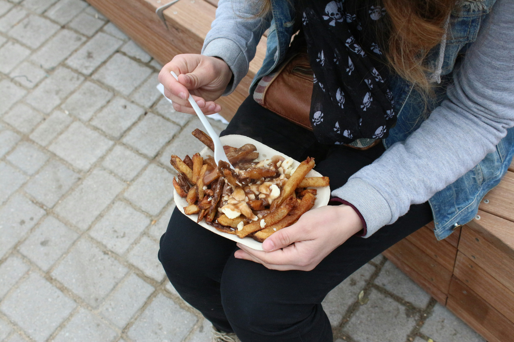
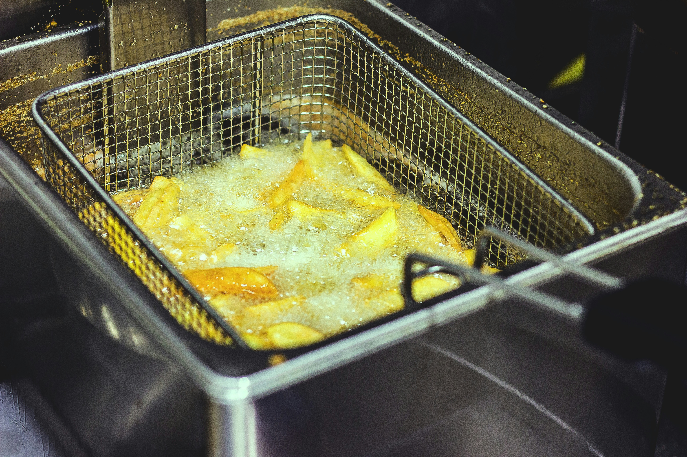
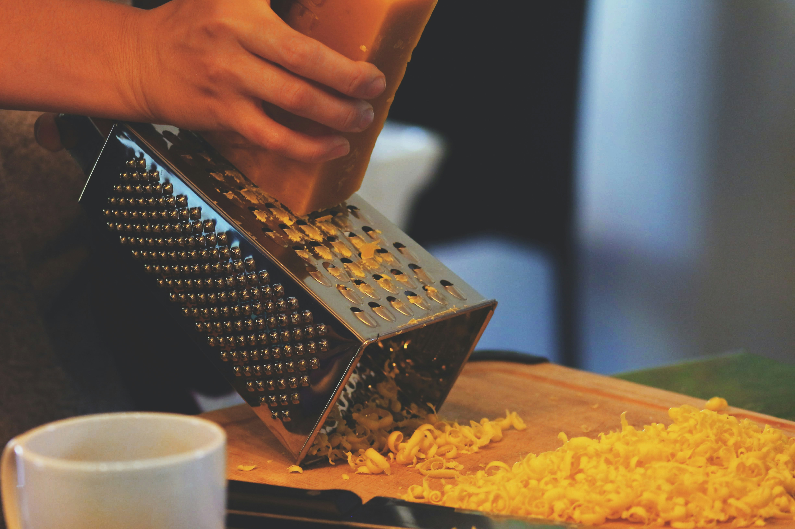
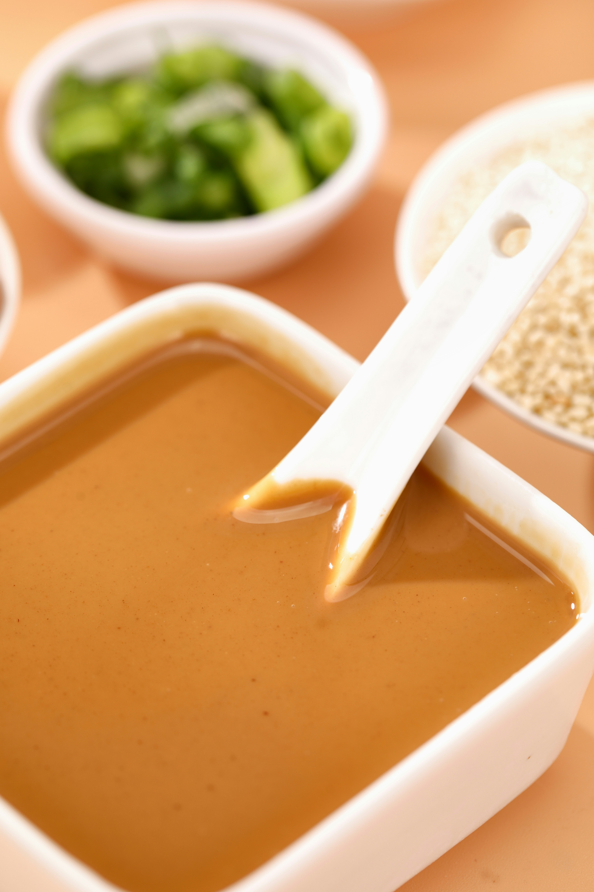
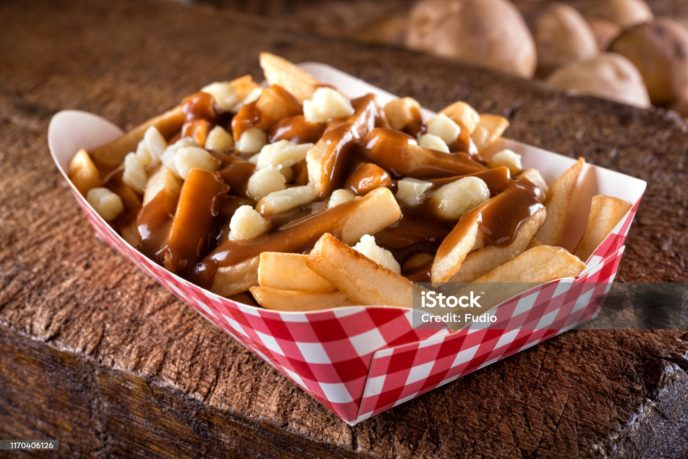

Poutine is an indulgence of crispy French fries, savory gravy, and melted cheese curds. Make this delicious Canadian specialty at home with this easy recipe! Side note, it's pronounced "Poo-tsin". Its a Frence creation from Quebec, and on the east side of Canada we pronounce it the original way, not like the west coast weirdo's who say "Poo-teen", Put some respect on this french delacacy's name!
Prep Time: 10 mins Cook Time: 20 mins Total Time: 30 mins Servings: 4
Heat oil in a deep fryer or deep heavy skillet to 365 degrees F (185 degrees C).

While the oil is heating, begin to warm gravy.

Place fries into the hot oil, and cook until light brown, 8 to 10 minutes. Cook fries in batches if necessary to allow them room to move a little in the oil. Remove to a paper towel-lined plate to drain.

Place fries on a serving platter, and sprinkle cheese over them.

Ladle warmed gravy over the fries and cheese, and serve immediately.

(per serving)
Calories 708 Fat 46g Carbs 51g Protein 24g